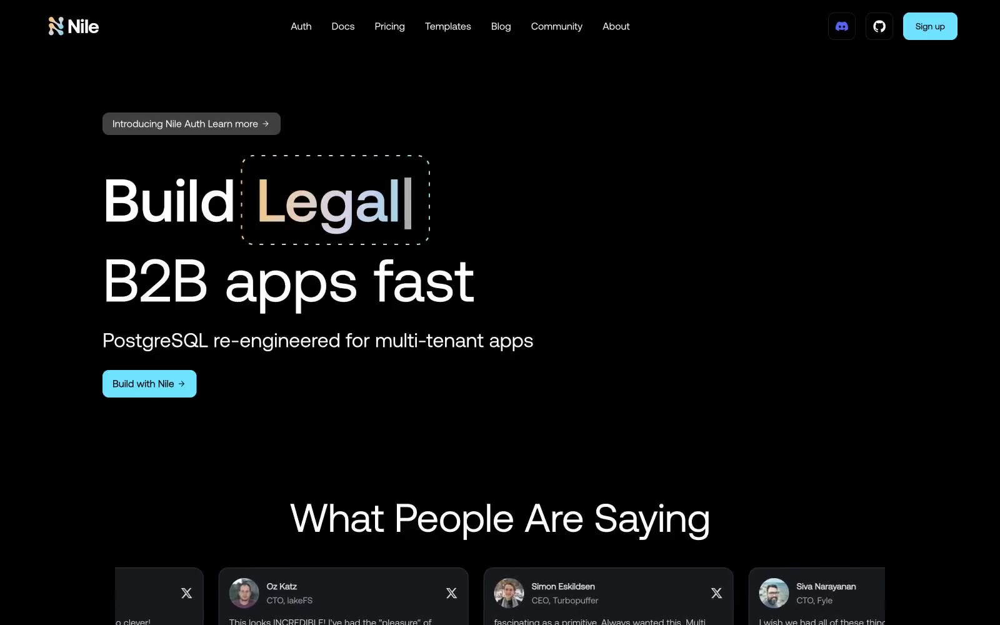

Nile Postgres 的 Design.md 主题展示，围绕暗色界面、AI、专业工具、SaaS 产品组织页面。
Explore Nile Postgres's dark Dev Tools design system: Midnight Ink #0e0e0e, Carbon Panel #1c1c1c colors, aeonik, aeonik typography, and DESIGN.md for AI agents.

#0e0e0e: #0e0e0e#1c1c1c: #1c1c1c#6fe2ff: #6fe2ff#ffffff: #ffffff#d3d3d3: #d3d3d3#3f3f3f: #3f3f3f#2f3336: #2f3336#ffba6a: #ffba6a#d8d3ff: #d8d3ff#2b2b2b: #2b2b2b#a1a1aa: #a1a1aa#9cdcfe: #9cdcfedisplay: Interbody: Intermono: ui-monospacehints: Inter,ui-monospace